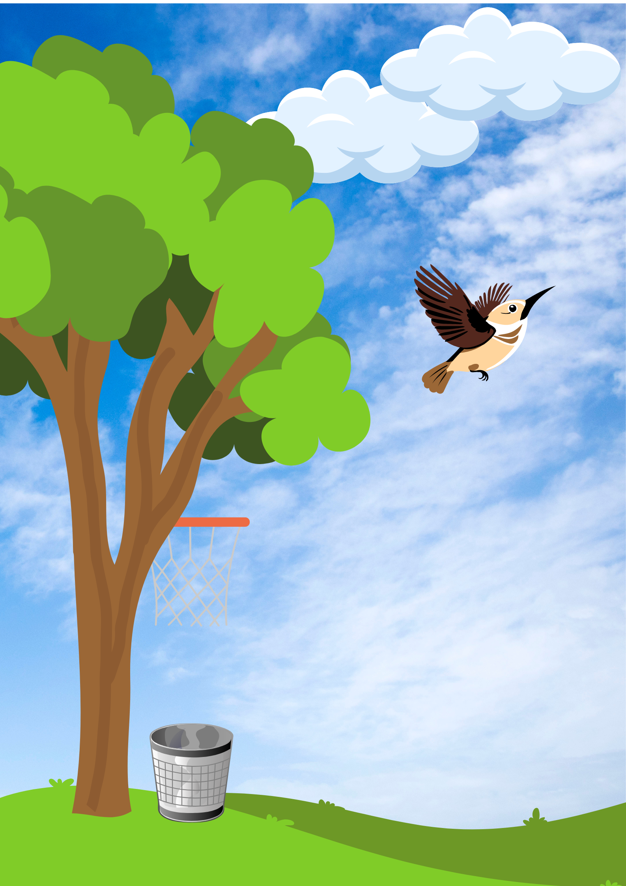
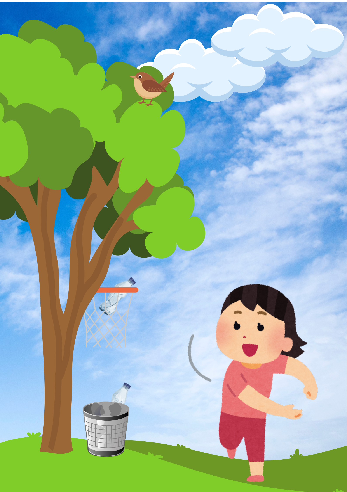
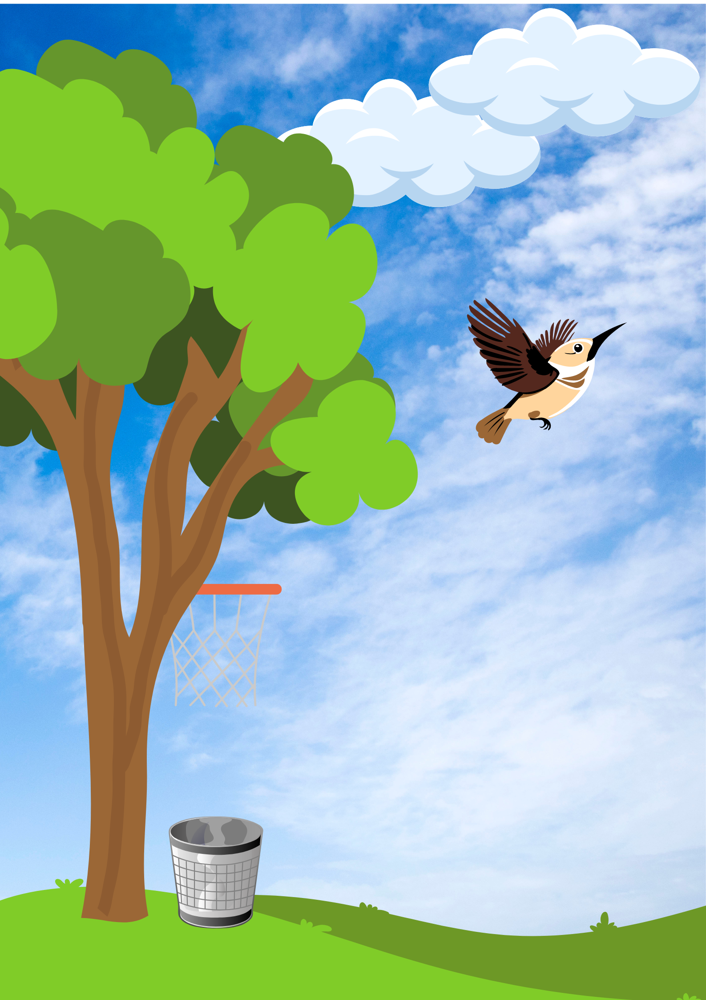
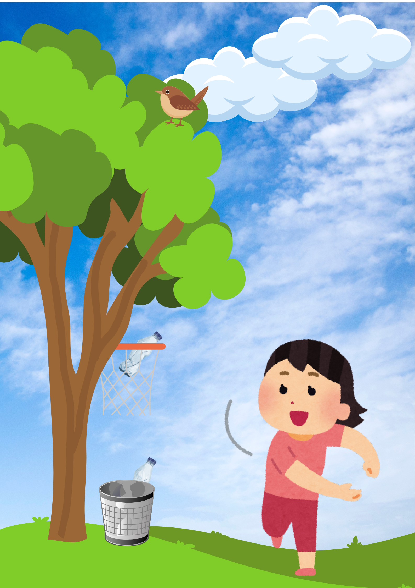

Short Story (Akankah Sungai Kembali Jernih?)
Akankah Sungai Kembali Jernih?
Oleh Amira Nabila Rachman
“Aku mau memancing ikan sama Indy di dekat sungai ya, Bu!” ucap
Vivi.
“Ok, boleh. Tapi, pulangnya jangan terlalu sore,” kata Ibu Vivi.
Sudah cukup lama Vivi tidak memancing ikan bersama Indy. Dulu, ia
suka memancing ikan bersama teman sekelas sekaligus tetangganya
itu di sungai dekat rumah karena di sungai itu terdapat banyak
sekali ikan. Ikan yang ia dapat kemudian dimasak.
“Maaf aku datang agak telat. Soalnya, aku tadi lagi main basket,”
kata Indy ketika ia sampai di sungai.
“Sudah dapat berapa ikan Vi?” tanya Indy lagi.
“Belum dapat sama sekali, nih. Kenapa ya sekarang susah banget
dapat ikan? Padahal dulu aku bisa dapat banyak ikan.” Wajah Vivi
mulai terlihat putus asa.
Tiba-tiba, Vivi merasa ada yang tersangkut di pancingnya.
Ia segera mengangkat pancingnya dan berharap mendapatkan ikan.
Ternyata itu adalah sebuah kantong plastik.
“Mungkin karena sungai ini sudah tercemar oleh plastik-plastik
seperti yang kamu temukan tadi. Plastik-plastik itu dibuang orang
ke sungai ini sehingga ikan-ikan lama- kelamaan akan mati karena
airnya tercemar,” jawab Indy.
“Bisa jadi. Tapi kenapa orang-orang membuang plastik ke sungai?
Padahal ada tempat sampah,” tanya Vivi.
Vivi pulang ke rumah dengan wajah muram. Ia kemudian bertanya ke
orang tuanya, apakah ikan di sungai berkurang karena airnya
tercemar oleh plastik-plastik yang dibuang sembarangan.
“Iya Vi. Ikan-ikan akan memakan plastik-plastik itu. Mereka
mengira plastik itu adalah makanan. Padahal, plastik itu sulit
terurai. Lama-lama plastik akan berubah menjadi mikroplastik yang
beracun bagi makhluk hidup,” jelas ibu Vivi.
Vivi merasa sedih mendengarnya. Ia tidak mau kelak ia akan makan
ikan beracun. Ia merasa harus melakukan sesuatu. Besoknya Vivi
menjelaskan rencananya di depan kelas.
“Kita harus membersihkan sungai, teman-teman. Kalau tidak, hewan
dan tumbuhan akan mati. Sampah juga dapat menyumbat selokan. Saat
hujan deras, manusia akan kebanjiran. Akhirnya kita semua akan
rugi.”
Hampir semua teman-teman Vivi setuju dengan idenya. Bahkan ada
beberapa murid yang tidak sekelas dengan Vivi ketika mendengar
dari teman lain ingin ikut membantunya. Ibu guru juga sangat
mendukung ide Vivi.
Vivi dan teman-teman sepakat untuk membersihkan sungai hari Sabtu
pagi. Vivi sangat senang dan menceritakan tentang rencananya
kepada orang tuanya ketika ia sampai rumah.
Hari yang ditunggu-tunggu Vivi pun datang. Murid-murid dan guru
sudah berkumpul di sungai dekat rumah Vivi. Mereka sudah siap
membersihkan sampah plastik di sungai. Setelah dua jam
membersihkan sungai, akhirnya mereka selesai. Sungai itu menjadi
bersih tanpa sampah.
“Eh Vi, kita kan sudah selesai membersihkan sungai, nih. Tapi,
gimana kalau ada orang-orang membuang sampah di sungai ini lagi?
Tidak mungkin setiap hari kita membersihkan sampah, kan?” bisik
Indy di tengah kerumunan teman-temannya.
“Hmm, iya juga ya. Kita kan tidak tahu siapa orang yang membuang
sampah plastik ini. Aku coba cari ide dulu deh,” kata Vivi.
Keesokan harinya, Indy menelpon Vivi bahwa ada lagi beberapa
sampah plastik di sungai.
“Duh, Vi. Tadi siang aku pergi ke sungai, tapi ada lagi sampah di
sana,” keluh Indy.
“Mungkin warga yang tinggal di pinggir sungai membuang sampah
plastik itu,” ucap Vivi.
Pada hari Senin, Vivi sedang beristirahat di kantin sekolah. Saat
ingin keluar kantin, ia melihat ada papan peringatan untuk tidak
membuang sampah sembarangan. Ia pun mendapat ide untuk membuat
papan peringatan untuk tidak membuang sampah di sungai. Vivi
memberitahu Indy tentang idenya, dan Indy akan ke rumah Vivi untuk
membuat papan peringatan. Sesampainya di rumah, Vivi segera
mengganti baju, kemudian menyiapkan spidol. Tak lama kemudian,
Indy pun datang membawa beberapa papan kayu.
“Jadi, kita akan menuliskan peringatan dilarang membuang sampah di
sungai. Terutama sampah plastik. Lalu, kita bawa papan kayunya ke
sungai dan kita letakkan itu di pinggir sungai,” jelas Vivi
. Akhirnya, mereka pun selesai membuat papan peringatan.
Mereka langsung membawa papan itu ke pinggir sungai.
Suatu hari, Vivi dan Indy pergi ke sungai untuk mengecek apakah
masih ada sampah plastik di sungai.
“Sepertinya tidak ada yang membaca papan peringatan kita. Masih
ada saja sampah plastik di sungai. Apakah papan peringatan kita
kurang banyak?” tanya Vivi.
“Sepertinya papan peringatan kita sudah cukup. Bagaimana kalau
kita coba juga buat tempat sampah berbentuk ring basket?” usul
Indy.
“Aku pernah melihat di internet dan sepertinya cukup menarik.”
“Kenapa harus ring basket?” tanya Vivi heran.
“Supaya membuang sampah ke tempatnya jadi kegiatan yang seru.
Kalau seru, orang akan tertarik untuk melakukannya.”
“Wah, boleh juga ide kamu. Nanti kita minta bantuan Bu Guru saja,
ya,” kata Vivi.
Beberapa hari kemudian, ketua RT menanyakan pada warga apakah ada
yang memasang papan peringatan di pinggir sungai.
“Oh iya Pak RT, aku dan Indy yang memasang papan peringatan itu
agar warga-warga yang tinggal di sekitar sungai tidak membuang
sampah sembarangan ke sungai. Karena sampah-sampah yang dibuang
sembarangan, ikan-ikan di sungai akan mati. Tapi, masih ada saja
sampah yang dibuang sembarangan di sungai,” jelas Vivi.
“Kami juga berencana membuat tempat sampah berbentuk ring basket
agar warga yang tinggal di pinggir sungai tertarik membuang sampah
di tempatnya,” jelas Indy.
“Oh, ide bagus itu. Bagaimana kalau saya dan warga membantu
membuat tempat sampahnya?” Ketua RT menawarkan bantuannya.
“Wah, tentu saja boleh. Nanti kita letakkan tempat sampahnya di
dekat sungai.”
Mereka pun mulai membuat tempat sampah. Tak terasa tempat sampah
berbentuk ring basket sudah jadi. Mereka kemudian memasang tempat
sampah itu di dekat sungai.
“Semoga para warga segera sadar tentang bahaya membuang sampah
plastik di sungai dan tidak membuang sampah plastik lagi,” kata
Indy dengan penuh harap.
Setelah selesai, semua warga mencoba permainan baru itu. Satu
persatu sampah dilempar ke tempat sampah berbentuk ring basket.
Seru sekali. Rasanya seperti berlatih bola basket sembari membuang
sampah.
Beberapa hari kemudian, Vivi dan Indy pergi ke sungai. Mereka
menemukan sampah plastik lagi di sungai itu sudah jauh berkurang.
Mereka sangat puas dengan usaha mereka untuk mengingatkan warga
bahwa sungai bukan tempat membuang sampah.